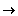
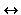
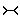
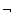
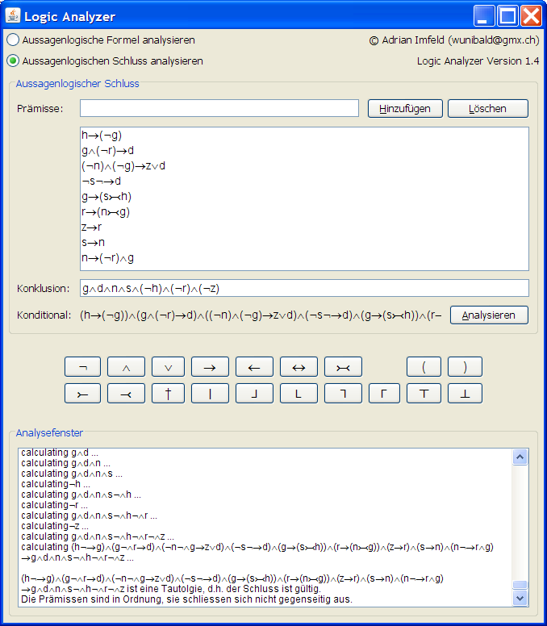

Das Programm ist in erster Linie für Leute gedacht, die sich bereits ein wenig mit Aussagenlogik auskennen. Trotzdem kann man auch als Anfänger einen Einblick in die ganze Sache gewinnen, z.B. mit der Einführung in die Aussagenlogik und den Übungsbeispielen. LogicAnalyzer baut auf Wahrheitstafeln auf.
Es sollte zuerst die neuste Version der Java-Unterstützung installiert werden. Danach kann LogicAnalyzer hier als JAR-Version heruntergeladen werden.
Die JAR-Version öffnet man mit Doppelklick auf LogicAnalyzer.jar. Falls das nicht klappt, Rechtsklick auf die Datei und öffnen mit Java(TM) Platform SE binary.
Hier soll nur ein ganz grober Einstieg in die Aussagenlogik gegeben werden. Wer sich für das Thema interessiert, sollte sich an seriösere Literatur wenden :).
Eine Aussage ist eine sprachliche Äusserung, die entweder wahr
oder falsch ist. "Heute regnet es" ist eine Aussage, während
"warum regnet es schon wieder?" keine Aussage ist. Eine Aussage kann
entweder einfach oder komplex sein. So ist z.B. die Aussage "Wenn du vom
Hochhaus hinunterspringst, stirbst du" eine komplexe Aussage,
zusammengesetzt aus zwei einfachen Teilaussagen. Nämlich aus 1."Du
springst vom Hochhaus hinunter " und 2. "Du stirbst". Die Verknüpfung
der Teilaussagen wird mit einem Junktor (Aussagenverknüpfung)
analysiert, hier dem Konditional (siehe Junktorentabelle),
welchen man umgangssprachlich mit "wenn... dann..." übersetzen
könnte.
Für die Aussagen verwendet man zur Abkürzung Aussagenkonstanten
in Form von Kleinbuchstaben, typischerweise p, q, r, s, t etc. Für die
Junktoren gibts Symbole, von denen die wichtigsten in der folgenden Junktoren-Tabelle
aufgeführt sind.
Wahrheitswerte* |
Symbol |
Name |
normalsprachliche Deutung |
künstliche Deutung |
|---|---|---|---|---|
w f f f |
Konjunktion |
und |
stets beides |
|
w w w f |
Disjunktion |
oder |
mindestens eines |
|
w f w w |
 |
Konditional |
wenn, dann |
das erste nicht ohne das zweite |
w f f w |
 |
Bikonditional |
genau dann, wenn |
beides oder keines |
f w w f |
 |
Kontravalenz |
entweder oder |
genau eines von beiden |
* Die Wahrheitwerte kommen aus der Verknüpfung von zwei Aussagen durch den jeweiligen Junktor zustande:
p |
q |
Konjunktion pq |
Disjunktion pq |
Konditional pq |
Bikonditional pq |
Kontravalenz pq |
|---|---|---|---|---|---|---|
w |
w |
w |
w |
w |
w |
f |
w |
f |
f |
w |
f |
f |
w |
f |
w |
f |
w |
w |
f |
w |
f |
f |
f |
f |
w |
w |
f |
Ausserdem gibts noch die Negation (), welche den Wahrheitswert einer Aussage umkehrt. Wenn p wahr ist, dann ist p falsch und umgekehrt.
Es muss darauf hingewiesen werden, dass es oft nicht einfach ist, alltagssprachliche Aussagen mit aussagenlogischen Formeln zu analysieren. So wird z.B. "Ich gehe an die Uni, obwohl ich keine Lust habe" mit pq (ich gehe an die Uni und ich habe keine Lust) analysiert. Das Widerstreben des "obwohl" fällt völlig weg. Hier sieht man, dass in der Aussagenlogik der Inhalt der sprachlichen Aussagen nicht interessiert, sondern dass es nur um wahr oder falsch geht.
Ausserdem können nicht alle Aussagen analysiert werden mit Aussagenlogik. Daher gibts noch andere, kompliziertere Logik-Arten: Prädikatenlogik, Quantorenlogik, Modallogik etc.
Konditionalsätze (wenn... dann...) sind speziell trickreich. Sie sind keine Kausalsätze, sondern Bedingungssätze, d.h. Sätze, die ein Bedingungsverhältnis ausdrücken, kein Ursache-Wirkung-Verhältnis. Der Kausalsatz "Die Kugel fällt zu Boden, weil ich sie losgelassen habe, ist nicht formalisierbar mit einem Konditional. Der Bedingungssatz "Wenn ich die Kugel loslasse, dann fällt sie zu Boden" allerdings schon.
Ich erkläre den Konditional anhand des Beispiels "Wenn Hans sich auf die Prüfung vorbereitet, dann besteht er die Prüfung" (pq).
Zusammengefasst: Wenn pq gilt, dann können wir von p auf q (Modus Ponens) und von q auf p (Modus Tollens) schliessen, aber nicht von p auf q und auch nicht von q auf p.
Von einer aussagenlogischen Schlussfolgerung spricht man, wenn von einer oder mehreren Aussagen (Prämissen) auf eine andere Aussage (Konklusion) geschlossen wird. Eine Schlussfolgerung ist dann gültig, wenn die als wahr angenommenen Prämissen zwingend zum Wahrsein der Konklusion führen, sonst nicht.
Beispiel: Die Sonne scheint. Wenn die Sonne scheint, dann gehts mir gut. Also
gehts mir gut.
(p: Die Sonne scheint. q: Es geht mir gut.)
Prämissen:
1 . p
2 . pq
Konklusion:
q
Die Prämissen werden mit einer Konjunktion () verknüpft und dann wird ein Konditional mit der Konklusion gebildet. Die Schlussfolgerung behauptet folgendes: Wenn Prämisse 1 wahr ist und Prämisse 2 wahr ist, dann ist die Konklusion wahr. Somit hängt die Gültigkeit der Schlussfolgerung von den möglichen Wahrheitswerten der zusammengesetzten Aussage (Schlusskonditional) p(pq)q ab:
p (Prämisse 1) |
q (Konklusion) |
pq (Prämisse 2) |
p(pq) (Konjunktion der Prämissen) |
p(pq)q (Schlusskonditional) |
|---|---|---|---|---|
w |
w |
w |
w |
w |
w |
f |
f |
f |
w |
f |
w |
w |
f |
w |
f |
f |
w |
f |
w |
Hier sieht man, dass der Schlusskonditional in allen möglichen Kombinationen der Wahrheitswerte der einfachen Aussagen (p, q) wahr ist. Es gibt keine Möglichkeit, dass der Schlusskonditional falsch wird, also ist der Schluss gültig. Der Schlusskonditional ist eine logisch wahre Aussage. Eine logisch wahre Aussage ist unter allen Kombinationen der Wahrheitswerte Ihrer Aussagenkonstanten (p, q , r etc.) wahr und wird auch Tautologie genannt. Eine logisch falsche Aussage ist unter allen Kombinationen der Wahrheitswerte Ihrer Aussagenkonstanten (p, q , r etc.) falsch und wird auch Antilogie genannt.
Für die Aussagenlogik gibts witzige Anwendungsmöglichkeiten. Zum Beispiel philosophische Gottesbeweise überprüfen, die Aussagen von Politikern lächerlich machen, Schlupflöcher in juristischen Paragraphen suchen etc. :). Im Folgenden kommen Beispiele und die Anleitung, wie man sie mit Hilfe von LogicAnalyzer lösen kann.
Der Dualist Rene Descartes behauptet in etwa folgendes (Meditation 6, Absatz
19):
Der Körper ist seiner Natur nach teilbar. Wenn Geist und Körper eines
und dasselbe sind, dann ist der Geist teilbar.
Der Geist ist seiner Natur nach aber unteilbar. Daraus folgt: Geist und Körper
sind nicht eines und dasselbe.
Wir wollen nun prüfen, ob Descartes' Argument gültig ist. Ein gültiges Argument bedeutet: Wenn wir die Prämissen (Voraussetzungen) akzeptieren, dann müssen wir nach aussagenlogischen Regeln zwingend auch die Konklusion (Schlussfolgerung) akzeptieren.
Wir führen folgende Symbole (Aussagenkonstanten) ein:
Die Prämissen und die Konklusion können nun so formalisiert werden:
Vorgehen mit LogicAnalyzer:
Hinweis: Die Aussagenkonstanten p, q etc. werden per Tastatur eingeben, die Junktoren per Klick auf den entsprechenden Button oder mit der Tastatur-Alternativeingabe ("->" wird automatisch zu "", "and" wird zu "", etc.). Die Alternativeingaben werden beim Zeigen mit der Maus auf einen Junktor-Button als Tooltip angezeigt.
Ist der Schluss von Descartes gültig? Ist der Monismus von Spinoza nun widerlegt?
Im alten Duden Rechtschreibung (Mannheim, 1980. S. 61-62) findet sich folgende Regel:
R204: Treffen bei Wortbildungen drei gleiche Konsonanten zusammen, dann setzt man nur zwei, wenn ein Vokal folgt. (Bsp. Schiffahrt)
Dazu wird die Ergänzung formuliert:
Ergänzung: Folgt auf drei gleiche Konsonanten noch ein anderer, vierter Konsonant, dann darf keiner von ihnen wegfallen.
Die Frage ist: Folgt die Ergänzung logisch schon aus R204?
Wir führen folgende Symbole (Aussagenkonstanten) ein:
Die Prämissen und die Konklusion können nun so formalisiert werden:
Vorgehen mit LogicAnalyzer:
Folgt nun die Ergänzung schon logisch aus Regel 204 oder nicht? Ist die
Regel von der Logik her überflüssig?
( = Ist der Schluss gültig oder nicht?)
Hier kommt noch ein lustiges Rätsel, dass ihr nun selbstständig probieren könnt:
Wolfgang fühlt sich krank und kommt ins Krankenhaus. Dort wird er von
einem Professor und einem Medizinstudenten untersucht. Danach entwickelt sich
folgende ärztliche Diskussion:
Professor: Bei dem Patienten kommen nur folgende sieben Krankheiten in Frage:
Gummikauzwang, Hirnversalzung, Nasophobie, Denkinsuffzienz, Riechneurose, Zehsyndrom
oder Sitzanomalie.
Angenommen, es ist Hirnversalzung? versucht's der Student.
Dann kann er nicht an Gummikauzwang leiden sagt streng der Professor.
Student: Wenn er Gummikauzwang hat, jedoch nicht an Riechneurose leidet?
Professor: Dann hat er Denkinsuffzienz. Und wenn der Patient nicht an Nasophobie
leidet, dann hat er, falls er nicht an Gummikauzwang erkrankt ist, das Zehsyndrom
oder Denkinsuffzienz, oder gar diese beiden Leiden.
Student: Wenn er nicht an der Sitzanomalie leidet, . . .
Professor: . . . dann hat er auch keine Denkinsuffzienz.
Student: Wenn der Patient unter Gummikauzwang leidet, . . .
Professor: . . . dann hat er entweder eine Sitzanomalie oder Hirnversalzung.
Falls er eine Riechneurose hat, dann hat er entweder Nasophobie oder Gummikauzwang.
Student: Wenn das Zehsyndrom vorliegt, . . .
Professor: . . . dann hat er auch eine Riechneurose, und falls er an Sitzanomalie
erkrankt ist, hat er auch Nasophobie. Falls er Nasophobie hat, ist zwar eine
Riechneurose auszuschliessen, doch liegt dann ein Gummikauzwang vor.
Nach dieser Unterhaltung ist der Student völlig verwirrt.
Welche Krankheiten hat der Patient nun, welche nicht?
Tipp: Für jede einzelne Krankheit eine Aussagenkonstante (p,q,r,...) definieren,
die Informationen korrekt mit Prämissen ausdrücken und das Problem
mit mehreren einzelnen Schlussfolgerungen mit LogicAnalyzer lösen!
© by Adrian Imfeld
Lösung zur Aufgabe mit den Krankheiten:
Die Prämissen werden mit Aussagekonstanten für Gummikauzwang (g), Hirnversalzung (h), Nasophobie (n), Denkinsuffzienz (d), Riechneurose (r), Zehsyndrom (z), Sitzanomalie (s) folgendermassen formalisiert:

Dann kann als Konklusion einzeln der Reihe nach g, h, n, etc. getestet werden. Der Patient hat Gummikauzwang (g), Nasophobie (n), Denkinsuffzienz (d) und Sitzanomalie (s), aber keine Hirnversalzung (h), keine Riechneurose (r) und kein Zehsyndrom (z). Der Screenshot zeigt die Gültigkeit dieser Konklusion.